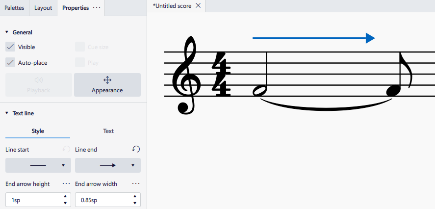
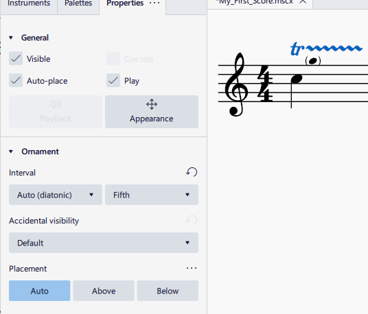
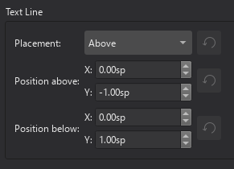

Other lines
Overview
A line is a type of object capable of anchoring to a horizontal continuous range of notes and rests. In MuseScore Studio, a line object contains a length of string or arc, and optionally some text. These objects can functionally affect the score and playback, and share similar configurable line properties, text properties, and styles.
Line objects include these subtypes. Follow the links to read more on each type:
- Standard line or Plain line (a simple general purpose, straight line) (jump to section)
- Lines with arrowheads (jump to section)
- Slurs
- Staff text lines and System text lines (jump to section)
- Hairpins and crescendo/decrescendo lines
- Tempo lines, such as ritardando (jump to section)
- Voltas (brackets on top of repeated sections)
- Pedal markings
- Octave lines (i.e. 8va)
- Trill lines (jump to section)
- Arpeggios
- Glissandi (slides) and portamento between notes
- Upprall, Downprall, Prallprall lines
- Guitar-related lines (jump to section): including barré lines, "let ring" lines, palm mute lines, and vibrato lines.
- Vibrato sawtooth, tremolo sawtooth (these do not affect playback)
- Ambitus (an early music feature)
While the following markings look like lines or arcs, they are not considered line objects in MuseScore because they cannot attach (anchor) to a continuous range:
- Bends (brass or guitar articulations)
- Ties
- Tremolo and rolls
- Single note ornaments such as turns, (short) trills and mordents
- (Staff) Brackets and curly braces
- Barlines
- Staff line
- To change global staff line thickness, go to Format -> Style... -> Score and change Staff line thickness. For other staff formatting settings, see Staff/Part properties.
The following description of actions and general behaviors applies to Line objects discussed here (those do not have a dedicated handbook chapter), for Line objects having dedicated handbook chapters, refer to those chapters for more accurate info.
Adding a line to your score
The easiest way to add a new line is to use either:
- A predefined keyboard shortcut, for example
Sto add a slur, or - The Lines and Guitar palettes.
To apply a line to a selected range:
- Select a range of notes.
- Click on a line in a palette.
Or
- Drag a line from a palette to the starting note.
- Adjust the end handle to extend its range (see Changing range of a line).
To apply a line to a single note, either:
- Select a note and click on the desired line in palettes, or
- Drag a palette line to the desired start note.
Adjusting a line
To adjust the range of a line, see Changing range of a line.
Types of lines
Standard lines
Plain lines are applied from the Lines palette. They can be purposed to anything you like such as to create guitar fingering/string number lines. They can be adjusted to be diagonal or vertical.
Lines with arrowheads
Lines with arrowheads may be applied from the Lines palette, or the line ends of an existing line can be changed to either filled or line arrows in the Properties panel. The height and width of the arrowhead may also be adjusted.

Staff and System Text lines
A staff text line, like staff text, is affixed to one staff in a system, and is indicative only for that staff. It appears only in parts featuring that staff.
A system text line, like system text, is affixed to one staff but is indicative for all the staves in the system. It appears in all instrument parts.
Tempo lines
Tempo markings such as rit. (ritardando) and accel. (accelerando) affect playback and can be used to create gradual tempo changes. See tempo-markings.md.
Guitar-related lines
These lines are available in the Guitar palette:
- Barré lines: Used to indicate fret positions. See #adding-a-barre-line-to-your-score.
- To create a Fingering/String number-line:
- Vibrato: You can change the shape of the line in the Vibrato section of the Properties panel.
- Palm mute: Changes playback sound to that of a clean muted electric guitar.
- Let ring: Affect playback, acts like the sustain pedal on a keyboard.
If you want to indicate a fingering that should apply over time:
- Add a Fingering from Fingerings palette.
- Add a line from Lines palette to the same note as the fingering.
- Adjust the length of the line as required.
Trill lines
Not to be confused with (short) trill ornaments. Trill lines have additional properties that allow showing bracketed small notes and accidentals to notate trill note pitch.
Trill lines create trills in playback for instruments using both SoundFonts and musesounds. When using Muse Sounds, a trill line will trigger professionally recorded trill audio for playback (if the sound sample for the notated interval exists), like the perfect fifth trill line pictured below.

Line properties
The Properties panel allows you to view and edit General, Appearance, and Playback settings.
The name of the section below varies depending on the type of line. But it will have two tabs marked Style and Text:
Style tab
Clicking on the Style tab allows you to set the properties of the line itself:
- Line type: Choice of straight, hooked, angle-hooked, T-style hooked, line arrow or filled arrow.
- Hook height / Arrow height / Arrow width: Adjust the height of the hook or the dimensions of the arrowhead.
- Thickness: Adjust the thickness of the line (and any hooks or line arrowheads applied).
- Style: Choice of solid, dashed or dotted line.
- Dash / Gap: Adjust the appearance if 'Dashed' is selected.
Text tab
Clicking on the Text tab allows you to apply and position any text associated with the line:
- Beginning text: Specify the text, if any, to appear at the beginning of the line.
- Text when continuing to a new system: If the line spans more than one system, this is the text that will appear before the line on each system after the first one.
- End text: Text to appear at the end of the line.
- Offset: Adjust the position of the text relative to the line (in sp.).
- Gap between text and line: Adjust both the amount of space from beginning text to the start of the line and end text to the end of the line.
Line style
See Templates and styles.
Use the Style dialog (Format -> Style...) to set certain global properties for lines. The relevant pages within the dialog are Voltas, Ottavas, Pedal lines, Trill lines, Vibrato lines, Glissandos and note-anchored lines, Text lines, System text lines, and Text styles. In the latter, you can edit the default text style for each line type.
